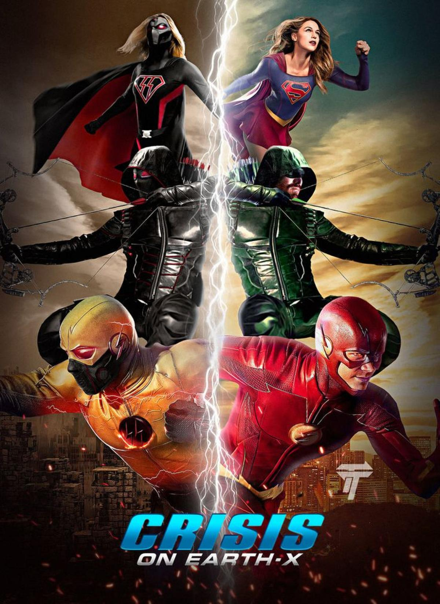

Crisis on Earth-X is the name of the fourth annual Arrowverse crossover event between Supergirl, Arrow, The Flash and DC's Legends of Tomorrow. The crossover aired over two nights from November 27 to November 28, 2017. It served as a set-up for the animated web series Freedom Fighters: The Ray. In "Crisis on Earth-X", Barry Allen and Iris West's friends come to Central City for their wedding, only for the proceedings to be interrupted by interlopers from the analogous universe of Earth-X where World War II was won by the Axis Powers.
| Serie | Episode No. | Episode Title | Original Air Date | |
|---|---|---|---|---|
| Part 1 | Supergirl | Season 3Epsiode 8 | "Crisis on Earth-X, Part 1" | November 27, 2017 |
| Part 2 | Arrow | Season 6Epsiode 8 | "Crisis on Earth-X, Part 2" | November 27, 2017 |
| Part 3 | The Flash | Season 4Epsiode 8 | "Crisis on Earth-X, Part 3" | November 28, 2017 |
| Part 4 | DC´s Legends of Tomorrow | Season 3Epsiode 8 | "Crisis on Earth-X, Part 4" | November 28, 2017 |

Barry and Iris's wedding brings the gang together, but things go awry when villains from Earth-X attack the ceremony. All of the superheroes band together with help from their super friends like Citizen Cold, The Ray, Felicity Smoak, Iris West and Alex Danvers to take on their most formidable villains yet. Earth's mightiest heroes – Green Arrow, Supergirl, The Flash and White Canary – lead their teams into battle to save the world

A Nazi regime rules the parallel world of Earth-X, where an archer known as Dark Arrow is the Führer and leader of the cabal the New Reichsmen. He seizes a temporal gateway from the Freedom Fighters, which enables travelling to other universes. On Earth-1, Barry Allen and Iris West's friends, including Kara Danvers and Alex Danvers from Earth-38, come to Central City for Barry and Iris's wedding. Harry Wells, Cisco Ramon, and Caitlin Snow develop a serum to separate the Firestorm matrix from Martin Stein and Jefferson Jackson. However, Jefferson is reluctant to give up being Firestorm. Oliver Queen re-proposes to Felicity Smoak, but she is hesitant about marrying him. The wedding ceremony is interrupted by invaders from Earth-X led by Dark Arrow, his Kryptonian wife Overgirl, and Prometheus. After Kara injures Overgirl, and Alex and Sara Lance capture Prometheus, the Nazis retreat. Dark Arrow and Overgirl, who are Oliver and Kara's doppelgängers respectively, discuss their next step with Eobard Thawne, Barry's speedster nemesis who was previously presumed dead. In S.T.A.R. Labs, Prometheus reveals himself as Tommy Merlyn's Earth-X doppelgänger, then takes a suicide pill out of loyalty to the Führer after taunting Oliver. Harry reveals that through his exploration of the multiverse, he discovered that Earth-X is a dystopian world where World War II was not won by the Allied Forces. Dark Arrow, Overgirl, and Thawne steal an experimental sub-light generator, the Prism, from a research company. Oliver's team, along with Harry, Killer Frost (Caitlin Snow), Cisco, and Mick Rory, are in captivity at S.T.A.R. Labs after the Nazi forces occupy it. Oliver, Barry, Sara, Martin, Jefferson, and Alex are taken to a concentration camp on Earth-X, while Kara is moved to S.T.A.R. Labs. Overgirl is dying from disproportionate solar irradiance in her heart and Dark Arrow plans to use the Prism, powered by S.T.A.R. Labs' particle accelerator, to create artificial red sunlight that can weaken both Karas' invulnerability, allowing Thawne to conduct a heart transplant from Kara to Overgirl. In the concentration camp, the heroes are rescued from execution at the hands of SS-Sturmbannführer Quentin Lance by Ray Terrill and Leo Snart (Leonard Snart's doppelgänger). Thawne prepares to operate on both Overgirl and Kara, and Iris and Felicity work to rescue their friends at S.T.A.R. Labs. General Winn Schott, the commander of the Freedom Fighters, is determined to strand Dark Arrow and Overgirl on Earth-1 by destroying their temporal gateway. While posing as Dark Arrow, Oliver discovers the Nazis' doomsday device, a timeship called Wellenreiter, a militarized equivalent of the Legends' Waverider. Oliver allows the timeship to enter Earth-1 to avoid jeopardizing his cover, but he is ultimately exposed when he refuses to kill Felicity's Earth-X doppelgänger, a concentration camp prisoner. The heroes struggle against both the Freedom Fighters' Red Tornado, deployed by Schott as a failsafe, and the Nazi forces, and the gateway is opened at the cost of Martin being mortally wounded. The heroes return to Earth-1, and Iris, Felicity, Kara, and the others are rescued by the returned heroes and the Waverider crew. Jefferson is also affected by Martin's injury, so Martin uses the serum to separate the Firestorm matrix and dies from his wounds. Jefferson tells Martin's family of his fate; they, along with the Legends and Barry's team are devastated by Martin's death. His death spurs the heroes to declare war on Earth-X's Nazi forces. When the Nazis attack Central City, the heroes counter their assault. Harry, who pilots the Waverider, destroys the Wellenreiter after the heroes disable its shield. Barry spares Thawne, who vows to return. During the fight with Kara, Overgirl's solar radiation goes nuclear and Kara carries her into space, where Overgirl explodes. Oliver kills Dark Arrow soon after. After Martin's funeral, Kara and Alex return to Earth-38, Ray returns to Earth-X, and Leo decides to remain with the Legends. John Diggle, an ordained minister, officiates Barry and Oliver's weddings with Iris and Felicity, respectively.